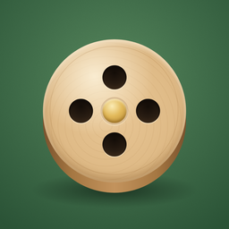

Add Venture
Keep score at the table. No ads, no account, works offline.
Need a hand?
Write to janjarosdev@gmail.com. Tell us which phone you use and what happened, and we'll get back to you.
Questions
What's free, and what comes with Plus?
Everything you need to play is free: Quick-tap and round-by-round scoring, every way to win, undo, the spinner that picks who starts, and the table tools (dice, coin, turn timer and chess clock). Free also keeps three presets and your last five games.
Add Venture Plus is a one-time purchase that adds the burgundy, navy and walnut felts, unlimited presets, your full game history with every score sheet, and player stats.
How do I restore Plus on a new phone?
Open Settings and tap Restore purchase, signed in with the Apple ID or Google account you bought it with. On Apple devices, Plus is shared with up to six people in your Family Sharing group.
Does it need the internet?
No. Add Venture works offline. The App Store or Google Play is only needed to buy or restore Plus.
Where are my games saved?
On your device, as you play, so closing the app never loses a game. They aren't uploaded anywhere. Your phone's own backup (iCloud or Google) may include them. Deleting the app deletes them.
How do I turn sounds or haptics on and off?
In Settings, under At the table. Sounds start off; haptics start on.
Privacy
Add Venture collects no data at all: no ads, no analytics, no tracking, no account. Read the privacy policy.